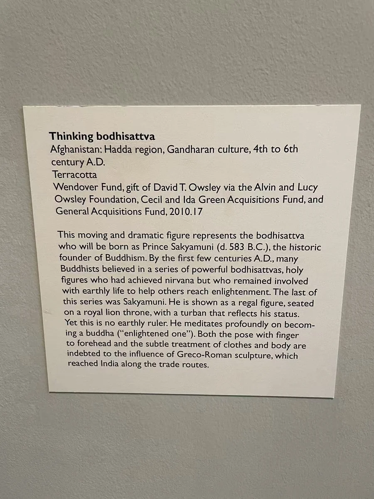

14 / 被塑出的面容
思惟：一尊陶土菩萨
脸与手靠近，身体缓缓向内收拢。

达拉斯的思惟菩萨把身体折成一个向内收拢的姿态。头倾向支起的手，腿部交叠，身体并不完全朝向正前方。珠饰、发束与衣料围着这组弯曲的线条展开，脸和手之间的距离很近。与站得笔直的石质菩萨相比，它让“思惟”首先成为一个可以从姿势读到的动作。
馆方资料将它定为4—6世纪，材料为陶土，表面施泥浆，归于哈达地区。它以烧制的陶土塑成，与同辑灰泥像的材料不同。近看这件像，丰满的体量与局部细密刻画并存：手臂把头部托起，颈部与肩部的倾斜又给面孔留出空间。残缺也没有完全打散这条从头到腿的连续曲线。 [1]
下方与两侧的小人物、支撑构件，使主像并非悬在空中。较大的身体与较小的配角，共同构成一组有层次的形象。把照片放大后，可以先沿手、面颊、肩膀缓缓看一遍，再退回整体。这样读到的不是抽象的沉思标签，而是材料如何让身体完成这一姿态。
本篇作品
思惟菩萨 · 2010.17
- 原题名
- Thinking Bodhisattva
- 年代
- 4—6世纪
- 材料
- 陶土，表面施泥浆
- 尺寸
- 82.19 × 62.23 × 26.67厘米
- 编号
- 2010.17
- 收藏／展出
- 达拉斯艺术博物馆
- 地域关系
- 哈达地区；具体原址未详
资料与来源
现场展签

